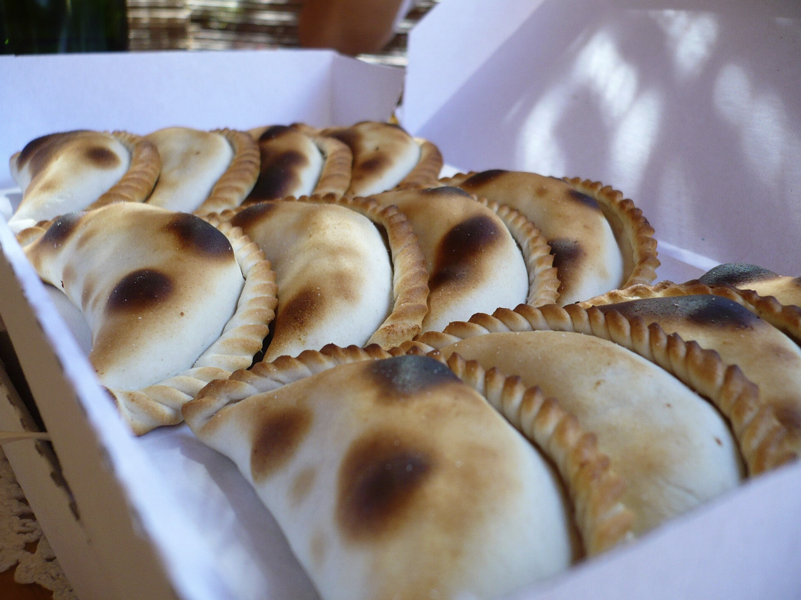
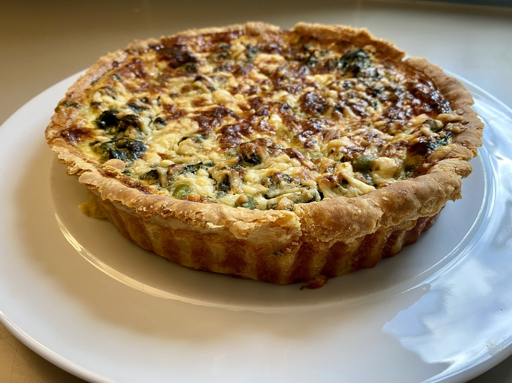

Do you like a buttery and flaky exterior, that holds hearty or salty fillings? Then savory pastries are for you!

Empanadas have savory or sweet fillings wrapped in dough and baked or fried to a golden flaky crust. These little savory treats delicous as a breakfast snack.

Quiches have a flaky pastry crust filled with a savory custard of eggs, milk or cream, and various fillings like cheese, vegetables, and meat. There are many ways you can eat this yummy pie.